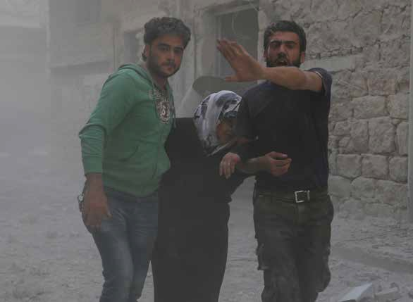

Aleppo, Syria. 31 May, 2016. Syrian regime forces jets have bombarded the district of Al-Sukkari in Aleppo four times. The airstrikes have led to ten people being injured. Government fighter jets have also shelled the All-Castelo road, a strategic link between Aleppo and its countryside. As a result the road has remained closed for many hours today. Idlib has also been subjected to heavy government forces airstrikes last night with at least 23 civilians killed as a result. While the UK-based Syrian Observatory for Human Rights has blamed Russia for the airstrikes in Idlib, the Russian Defence Ministry has so far denied any involvement in the Idlib attacks. Idlib is controlled by a coalition of rebel groups, which include the An-Nusra Front and Ahrar As-Sham. Alliances between the An-Nusra Front and other military factions in Syria have hindered the implementation of the truce in different parts of Syria according to the US. While Russia has been criticised for targeting non-jihadist rebels rather than just focusing on fighting An-Nusra and the Islamic State group, Moscow has called for other rebel groups to withdraw from areas controlled by Al-Nusra and break off from the jihadist groups. According to the UN, more than 250,000 people have been killed in Syria since the protests erupted in 2011 and turned into a complex civil war.